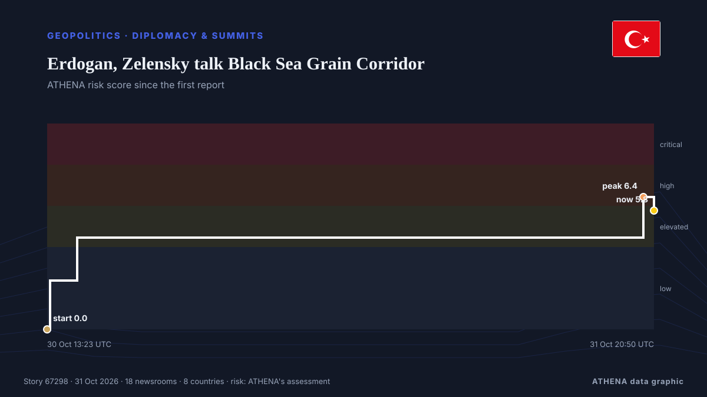

Diplomacy & summits
| 18 Oct | 0 |
|---|---|
| 19 Oct | 0 |
| 20 Oct | 0 |
| 21 Oct | 2 |
| 22 Oct | 1 |
| 23 Oct | 1 |
| 24 Oct | 0 |
| 25 Oct | 0 |
| 26 Oct | 5 |
| 27 Oct | 2 |
| 28 Oct | 5 |
| 29 Oct | 1 |
| 30 Oct | 4 |
| 31 Oct | 2 |

Erdogan, Zelensky talk Black Sea Grain Corridor
Turkish President Recep Tayyip Erdogan and Ukrainian President Volodymyr Zelensky agreed on Saturday to continue work on the Black Sea Grain Corridor, aimed at enabling grain shipments from Ukraine. from AzerNews
US Embassy in Russia warns citizens in Moscow of potential 'mass casualty event' near museum
"The US Embassy in Moscow is aware of a credible threat of a mass casualty event TODAY, October 31, at the Tsaritsyno Museum Reserve in Moscow," the embassy wrote. from The Jerusalem Post
Nations commit to get nature goals back on track
Nearly 200 nations struck hard-fought agreements Friday at a U.N. biodiversity summit, but the outcome was accompanied by disappointment over missed opportunities to address humanity's destructive… from Phys.org
Qatari Mediators Return to Tehran in Push for US-Iran Peace Deal
Qatari mediators returned to Tehran on Friday to advance efforts for a US-Iran agreement, but disagreements over nuclear negotiations, oil sanctions and a US port blockade continue to obstruct a… from Khaama Press
Starved residents of Russian-occupied Oleshky return to Ukraine during a rare local ceasefire
The six-day ceasefire was reached after mediation efforts by US first lady Melania Trump and with the pope’s help. from The Straits Times
Trump reverses decision to cancel Kansas and Iowa rallies before midterms
The president cancelled the events in favor of tele-rallies, as Republicans face a fight to retain control of Congress Donald Trump cancelled, and then promptly uncancelled, two in-person rallies in… from The Guardian
Vance outreach to Iran related to medical supplies, says Trump
Oct 29 - US President Donald Trump said that Vice President JD Vance's outreach to Iran was about helping the country get medical supplies, after US media reported Vance had written to Tehran's top… from The Straits Times
EU considering Canada as ‘associate member’, Ursula von der Leyen says, despite internal opposition
The European Commission president was speaking at a Canada-EU summit in Montreal. from The Straits Times
N. Korea appears to test propaganda loudspeakers along border
SEOUL, Oct. 29 (Yonhap) -- North Korea appears to have conducted a test broadcas... from Yonhap (English)
Norwegian prime minister denies Putin lectured him and Finnish president on medieval Slavs during call
Finnish President Alexander Stubb and Norwegian Prime Minister Jonas Gahr Støre spoke to Vladimir Putin about Russia’s war against Ukraine and diplomatic efforts to end it, after consulting Kyiv. from Ukrainska Pravda (English)
Russia woos African leaders at Moscow summit
Moscow seeks to strengthen ties with countries it sees as 'natural allies' against the West amid heavy sanctions over its Ukraine offensive. from Free Malaysia Today
Norway trolls Trump with toilet joke after his Nobel Prize meltdown
Norway’s tourist board hit back at the US president’s tantrum over not being awarded the Nobel Prize. from The Independent
Ushakov: Date of trilateral talks depends on Kyiv's actions
Russian President Vladimir Putin's Foreign Policy Assistant Yury Ushakov (pictured) said on Thursday that the timing of trilateral negotiations between the United States, Russia and Ukraine depends… from AzerNews
Ethiopia Welcomes UAE Candidate Lana Nusseibeh for UN Secretary-General Post
UAE Minister of State Lana Nusseibeh has entered the race to become the next UN secretary general. from The National
Zelensky: No Energy Ceasefire With Russia, but Oleshky Truce Brings Hope
On Wednesday, President Volodymyr Zelensky said the proposed energy ceasefire between Ukraine and Russia never took effect because Moscow continued striking Ukrainian energy infrastructure. from Kyiv Post
Norway and Finland hold rare phone call with Putin: What that means
The two Nordic leaders are attempting to influence US-brokered talks in Abu Dhabi to end the war in Ukraine. from Al Jazeera English
Trump Fires White House Press Secretary Katie Zacharia After Just 5 Days
Donald Trump dismissed new White House Press Secretary Katie Zacharia on Friday, Oct. from Kyiv Post
Attacker killed outside Belgrade’s Israeli embassy
Serbian police say an unidentified assailant attacked a guard with knives outside the Israeli Embassy in Belgrade and was killed just after midnight Wednesday. from ABC News (International)
Talks on Ukraine in Abu Dhabi to take place after November 4 — Kremlin aide
The date will be determined soon, Yury Ushakov said. from TASS (English)